무선설비산업기사 (2014-03-09 기출문제)
1과목: 디지털 전자회로
1. 다음 중 정류회로에서 리플 함유율을 감소시키는 방법으로 적합하지 않은 것은?
- 입력전원의 주파수를 낮게 한다.
- 반파정류회로보다 전파정류회로를 이용한다.
- 콘덴서입력형 평활회로에서 콘덴서 용량을 크게 한다.
- 초크입력형 평활회로에서 초크의 인덕턴스를 크게한다.
(정답률: 78%)

2. 직류 출력전압이 무부하일 때 300[V], 부하일 때 220[V]이면 정류기의 전압변동률은 약 몇[%] 인가?
- 10.25[%]
- 22.45[%]
- 36.36[%]
- 47.25[%]
(정답률: 89%)
3. 다음 중 전파정류회로의 특징이 아닌 것은?
- 정류 전류는 반파정류의 2배가 된다.
- 리플 주파수는 전원 주파수의 2배이다.
- 리플률이 반파정류회로보다 적다.
- 전원 전압의 직류 자화가 있다.
(정답률: 72%)
4. 다음 중 전계효과 트랜지스터(FET)에 관한 설명으로 틀린 것은?
- 입력저항이 높다.
- 접합형 입력저항은 MOS형보다 낮다.
- 저주파시 잡음이 적다.
- 소수캐리어에 의한 증폭작용을 한다.
(정답률: 76%)
5. 증폭도가 40[dB], 잡음지수가 6[dB]인 전치증폭기(pre-amp)를 증폭도 20[dB], 잡음지수 6[dB]인 주증폭기(Main Amp)에 연결할 때 종합 잡음지수는?
- 6.125[dB]
- 5.50[dB]
- 7.125[dB]
- 7.50[dB]
(정답률: 69%)
6. 소신호 증폭이나 트랜지스터의 활성역영에서만 동작하게 만든 증폭기는?
- A급 증폭기
- AB급 증폭기
- B급 증폭기
- C급 증폭기
(정답률: 73%)
7. 트랜지스터가 차단과 포화에서 동작될 때 무엇처럼 동작하는가?
- 스위치
- 선형증폭기
- 가변용량
- 발진기
(정답률: 81%)
8. 다음 중 발진기의 발진조건으로 틀린 것은?
- 궤환회로가 있으며 정궤환으로 동작한다.
- 궤환회로에 의한 위상천이는0°이다.
- 궤환회로를 포함한 폐루프 이득이 1이다.
- 초기 시동시에는 폐루프 이득이 1보다 작다.
(정답률: 64%)
9. 외부로부터의 전기적인 신호가 없어도 회로 내에서 교류신호인 전기진동을 발생하는 회로는?
- 비교기
- 정류기
- 증폭기
- 발진기
(정답률: 81%)
10. 15[kHz]까지 전송할 수 있는 PCM시스템에서 요구되는 최소 표본화 주파수는?
- 10[kHz]
- 20[kHz]
- 30[kHz]
- 40[kHz]
(정답률: 88%)
11. Vc=20cosωct[V]의 반송파를 Vs=14cosωst[V]의 신호파로 진폭 변조했을 때 변조도(m)는 몇 [%]인가?
- 60[%]
- 70[%]
- 80[%]
- 90[%]
(정답률: 76%)
12. 다음 중 펄스신호에 대한 설명으로 틀린 것은?
- 상승기간이란 펄스의 진폭의 10[%]에서 90[%]까지 상승하는데 걸리는 시간을 말한다.
- 하강시간이란 펄스의 진폭이 90[%]에서 10[%]까지 하강하는데 걸리는 시간을 말한다.
- 펄스폭이란 펄스 파형이 상승 및 하강의 진폭의 66.7[%]가 되는 구간의 시간을 말한다.
- 오버슈트란 상승 파형에서 이상적 펄스파의 진폭보다 높은 부분을 말한다.
(정답률: 86%)
13. 그림(a)의 회로에 그림(b)와 같은 파형전압을 인가할 때 출력되는 파형으로 가장 적합한 것은? (단,RC>T)
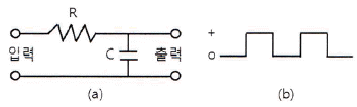
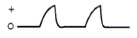
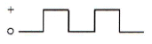
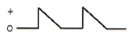
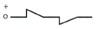
(정답률: 80%)
14. 16 진수(2AE)16을 8 진수로 변환하면?
- (257)8
- (1256)8
- (2557)8
- (4317)8
(정답률: 84%)
15. 2진코드 0011과 0100을 더하여 그레이코드(Gray Code)로 변환한 값은?
- 0100
- 0101
- 0111
- 1001
(정답률: 63%)
16. 진리표가 다음과 같을 때 해당되는 게이트는?
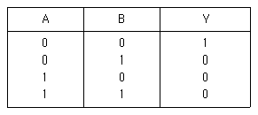
- AND
- OR
- NAND
- NOR
(정답률: 73%)
17. 다음 중 링 카운터에 대한 설명으로 틀린 것은?
- 입력 신호를 받을 때 마다 상태가 하나씩 다음으로 이동한 카운터이다.
- 각각의 상태마다 한 개의 플립플롭을 사용하는 카운터이다.
- 디코딩게이트를 사용하지 않고 디코딩 할 수 있다.
- 특별한 순차를 만들고자 할 때 사용한다.
(정답률: 56%)
18. 여러 개의 입력신호 가운데 하나를 선택하여 출력하는 동작을 하는 것은?
- 디멀티플렉서
- 멀티플렉서
- 레지스터
- 디코더
(정답률: 87%)
19. 레지스터(Register)의 기능으로 맞는 것은?
- 펄스 신호의 발생
- 데이터의 일시 저장
- 카운터 대용
- 클록 회로의 동기
(정답률: 90%)
20. 다음 중 카운터를 사용할 수 있는 응용 사례가 아닌 것은?
- Timer
- 기본 펄스 주파수의 체배
- 기본 펄스 주파수의 분주
- 펄스 진폭의 증폭
(정답률: 69%)
2과목: 무선통신 기기
21. 그림과 같은 프리엠퍼시스 회로에서 시정수를 40[μs]가 되도록 하려면 C의 값을 얼마로 하면 되는가?(문제 복원 오류로 그림이 없습니다. 정확한 그림 내용을 아시는분께서는 관리자 메일로 부탁 드립니다. 정답은 4번입니다.)
- 75[pF]
- 80[pF]
- 750[pF]
- 850[pF]
(정답률: 89%)
22. FM수신기에서 Limiter 회로의 역할은 무엇인가?
- 주파수의 변화에 따른 출력 전압의 변화를 검출
- 잡음지수를 증가시키는 역할
- 수신신호의 진폭을 일정하게 만드는 역할
- 송신측에서 강조되어 보내진 높은 주파수 신호를 수신단에서 억제하는 역할
(정답률: 72%)
23. AM 송신기에서 정보신호가 2cos2πfmt이고 반송파 신호가 10cos2πfct일때 변조도는 몇 [%]인가?
- 20[%]
- 40[%]
- 60[%]
- 80[%]
(정답률: 63%)
24. FM 송신기에서 최대 주파수편이가 규정치를 넘지 않도록 음성신호 등의 진폭을 일정하게 제한하는 회로는?
- AFC 회로
- IDC 회로
- Squelch 회로
- Limiter 회로
(정답률: 71%)
25. 무선 송신기에서 주파수 체배기에 의해 고조파 신호 발생은 필연적이다. 불필요한 고조파 신호를 제거하는 회로는 무엇인가?
- 미분회로
- 발진회로
- 필터회로
- 증폭회로
(정답률: 87%)
26. 동일한 CDMA 주파수를 사용하는 동일 기지국내의 섹터간 핸드오프는?
- 중간(Middle) 핸드오프
- 소프터(Softer) 핸드오프
- 하드(Hard) 핸드오프
- 아날로그 핸드오프
(정답률: 85%)
27. 다음 중 위성위치정보시스템(GPS)에 대한 특징으로 틀린 것은?
- WGS-84라는 공통 좌표계를 사용한다.
- 측정된 위치 자료의 온라인 처리가 가능하다.
- 거리 측정이 간편하고 신속한 측위가 가능하다.
- 각 나라별로 시차가 있어 각 나라별 서비스가 가능하다.
(정답률: 85%)
28. 이동전화 시스템에서 기지국이 호(Call)를 처리하는 구역을 의미하는 것은?
- Bit
- Call
- CELL
- Base Station
(정답률: 85%)
29. 국내 최초의 민간 통신·방송 상용위성으로 우리나라를 세계 23번째 위성 보유국의 반열에 올려놓은 위성은?
- 아리랑 위성
- 우리별 위성
- 무궁화 위성
- 한누리 위성
(정답률: 85%)
30. 이동통신에 사용되는 무선 채널제어에는 순방향 채널제어와 역방향 채널제어가 있다. 이 중 역방향 채널제어에 해당하는 것은?
- Pilot Channel
- Sync Channel
- Access Channel
- Paging Channel
(정답률: 87%)
31. 다음 중 스위칭 레귤레이터에 대한 설명으로 맞는 것은?
- DC 전압을 일정한 주파수의 AC 전압으로 변환하는 장치
- AC 전압을 DC 전압으로 변환하는 장치
- AC 전압을 다른 주파수와 크기를 갖는 AC전압으로 변화하는 장치
- DC 전원을 다른 크기의 DC 전원으로 변환하는 장치
(정답률: 69%)
32. 다음 중 수신기의 전기적 성능에 해당되지 않는 것은?
- 감도
- 선택도
- 충실도
- 전력
(정답률: 81%)
33. 전원설비의 전력변환장치 중 인버터(Inverer)에 대한 설명으로 맞는 것은?
- 직류전원을 다른 크기의 직류전원으로 변환하는 장치
- 직류전압을 일정한 주파수의 교류전압으로 변환하는 장치
- 교류전압을 직류전압으로 변환하는 장치
- 교류전압을 다른 주파수와 크기를 갖는 교류전압으로 변환하는 장치
(정답률: 88%)
34. CDMA 중계기의 상태를 감시하기 위한 CDMA 감시단말기를 중계기에 연결하려고 한다. 전원을 중계기에서 공급되는 전원을 사용하고자 하며 중계기의 공급전원 DC(직류) 3.5[V]일 때 필요한 장치는 무엇인가?
- 컨버터(Converter)
- 인버터(Inverter)
- 정류기(Rectifier)
- 계전기(Repeater)
(정답률: 72%)
35. SSB 수신기의 선택도 측정을 위한 장비의 구성으로 맞지 않는 것은?
- 멀티테스터
- 오실로스코우프
- 의사공중선
- 표준주파수발진기
(정답률: 46%)
36. 광대역 FM송신기로 송신하는 신호의 최대 주파수 편이가 30[kHz]이고, 변조 주파수가 5[kHz]일 때, 이 FM신호의 대역폭은 약 몇 [kHz]인가?
- 10[kHz]
- 35[kHz]
- 70[kHz]
- 100[kHz]
(정답률: 75%)
37. 급전선의 종단을 개방했을 때의 입력측에서 본 임피던스를 Zf라 하고 종단을 단락했을때의 임피던스를 Zs라고 할 때 특성 임피던스 Zo는?
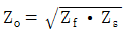
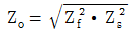
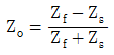
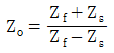
(정답률: 85%)
38. 원하는 신호에 근접한 주파수의 방해가 있는 경우 수신기의 감도가 저하 되는 현상은?
- 혼변조
- 상호변조
- 감도억압효과
- 스퓨리어스 저하효과
(정답률: 72%)
39. 다음 그림은 Analog 입력신호에 대한 펄스부호변조(PCM) 과정을 나타낸 것이다. (A), (B), (C)에 들어갈 과정으로 올바르게 짝지어진 것은?
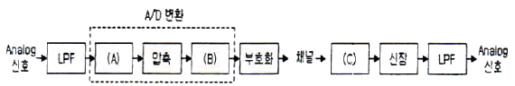
- (A)=양자화, (B)=복호화, (C)=표본화
- (A)=양자화, (B)=표본화, (C)=복호화
- (A)=표본화, (B)=양자화, (C)=복호화
- (A)=표본화, (B)=복호화, (C)=양자화
(정답률: 91%)
40. 다음 중 측정기기 사용법에 대한 설명으로 옳지 못한 것은?
- 전원을 연결하기 전에 먼저 전원공급장치의 출력전압과 측정기기의 정격전압이 같은지 확인한다.
- 측정 전에 측정기기의 지침이 “0”에 있는지를 확인한다.
- 측정하기 전에 먼저 측정기기의 측정범위 설정스위치가 적절한 범위에 있는지 확인한다.
- 측정범위를 모를 때는 측정범위 설정 스위치를 제일 낮은 범위로 설정하고 측정을 시작한다.
(정답률: 88%)
3과목: 안테나 개론
41. 다음 중 전파의 전파속도에 영향을 미치는 요소로 맞는 것은?
- 유전율과 투자율
- 점도와 유전율
- 투자율과 도전율
- 유전율과 도전율
(정답률: 91%)
42. 다음 중 균일 평면 전자파에 대한 설명으로 틀린 것은?
- 전계와 자계가 모두 전파방향과 수직인 평면 내에 있다.
- 에너지 밀도가 변하지 않고 파동의 각 부분이 같은 방향으로 직진하는 이상적인 파동으로서 송신안테나로부터 원거리의 영역에서 존재한다.
- 종파이며 ‘TE’파로 불린다.
- 균일한 평면파는 2차원 면에 무한히 퍼져있기 위한 무한량의 에너지를 필요로 한다.
(정답률: 87%)
43. 전류의 의한 자계의 방향을 나타내는 법칙은?
- 렌쯔의 법칙
- 암페어의 오른나사법칙
- Stokes 정리
- 패러데이의 법칙
(정답률: 86%)
44. 다음 중 도파관에 대한 설명으로 틀린 것은?
- 취급할 수 있는 전력이 크다.
- 외부에 전파를 방사하지 않으므로 유도 방해가 적다.
- 도파관은 내벽에 은 또는 금으로 도금하기에 전도도가 높고 손실이 적다.
- 차단주파수 이하의 전파만 통과시키므로 저역여파기로 동작한다.
(정답률: 74%)
45. 50[Ω]의 무손실 전송선로에서 부하 임피이던스 ZL=50-j65[Ω]이다. 이때 반사계수의 크기는 얼마인가?
- 약 0.45
- 약 0.55
- 약 0.65
- 약 0.75
(정답률: 53%)
46. 다음 중 임피던스 정합에 대한 내용으로 틀린 것은?
- 부하가 선로에 정합되었을 때 급전선에서의 전력손실이 최소이다.
- 수신 장치에서 시스템의 S/N비를 향상시킨다.
- 전력 분배망 회로에서 진폭과 위상의 오차를 감소시킨다.
- 부하 임피던스 실수부가 “0”인 경우에만 정합회로를 구할 수 있다.
(정답률: 86%)
47. 다음 중 급전선의 필요조건에 대한 설명으로 틀린 것은?
- 전송 효율이 좋은 것
- 송신용의 경우 절연내력이 클 것
- 유도 방해를 주거나 받지 않을 것
- 급전선의 파동 임피던스가 가급적 클 것
(정답률: 82%)
48. 다음 중 안테나의 임피던스 정합방법으로 사용되지 않는 것은?
- 1/4파장 임피던스 변환기
- 스터브튜너(Stub tuner)
- 디시페이터(Dissipator)
- 테이퍼선로(Tapered line)
(정답률: 67%)
49. 공중선에 직렬로 삽입하는 공중선 부하 코일(Loading coil)의 기능은?
- 등가적으로 공진파장의 연장
- 등가적으로 공진파장의 단축
- 등가적으로 공진주파수의 증가
- 등가적으로 공진주기의 억제
(정답률: 82%)
50. 다음 중 안테나의 특성과 관계가 먼 것은?
- 편파
- 복사각
- 전후방비
- 영상주파수
(정답률: 83%)
51. 다음 중 안테나의 광대역성을 갖도록 하는 방법으로 틀린 것은?
- 안테나의 Q를 작게 한다.
- 상호 임피던스의 특성을 이용한다.
- 진행파 여진형의 소자를 이용한다.
- 안테나 도체의 직경을 좁게 한다.
(정답률: 71%)
52. 다음 중 방사효율이 가장 큰 경우는?
- 손실저항이 10[Ω]인 반파장 다이폴 안테나
- 손실저항이 20[Ω]인 반파장 다이폴 안테나
- 손실저항이 50[Ω]인 반파장 다이폴 안테나
- 손실저항이 70[Ω]인 반파장 다이폴 안테나
(정답률: 80%)
53. 다음 중 지향성 공중선에 대한 설명으로 맞는 것은?
- 무선전자파 에너지를 모든 방향으로 똑같이 잘 송수신할 수 있는 공중선
- 수평으로 전파되는 전자파 에너지를 송수신하는 공중선
- 주로 단일 방향의 전자파 에너지를 송수신 하는 공중선
- 송신전력을 측정하기 위해 방향성 결합기를 사용하는 공중선
(정답률: 58%)
54. 다음 중 안테나를 사용주파수에 따라 분류할 때 장ㆍ중파용인 것은?
- Whip 안테나
- 원추형 안테나
- Horn 안테나
- Loop 안테나
(정답률: 79%)
55. 다음 중 전리층에서 일어나는 현상이 아닌 것은?
- 전파의 회절
- 전파의 산란
- 전파의 반사
- 전파의 굴절
(정답률: 77%)
56. 전계강도의 변동폭이 커서 특히 마이크로파대역에서 실용상 문제가 되는 페이딩은 어느 형인가?
- K형
- 신틸레이션형
- 선택형
- 덕트(Duct)형
(정답률: 85%)
57. 다음 중 MUF(Maximum Usable Frequency)의 설명으로 틀린 것은?
- 주간에는 낮고 야간에는 높다.
- 여름에 높고 겨울에 낮다.
- 송신전력과는 무관하다.
- 높은 주파수는 전리층을 통과하므로 수신점에 도달하지 못한다.
(정답률: 65%)
58. 단파통신에서 주로 이용되는 전리층 영역은?
- F층
- E층
- D층
- C층
(정답률: 61%)
59. 야간에 원거리 중파방송의 라디오가 잘 들리는 이유는 무엇인가?
- 지표파가 잘 전파되므로
- 산란파가 잘 전파되므로
- D층의 흡수가 적으므로
- 페이딩 현상이 적으므로
(정답률: 80%)
60. 전리층 반사파는 입사각이 어느 정도 이상으로 커야만 지구로 돌아온다. 이때 전리층 반사파가 최초로 지표면에 도달하는 지점과 송신점간의 거리를 무엇이라 하는가?
- 불감지대(Skip Zone)
- 프리즈넬 존(Fresnel Zone)
- 블랭킷(Blanket) 에리어
- 도약거리(Skip Distance)
(정답률: 85%)
4과목: 전자계산기 일반 및 무선설비기준
61. 컴퓨터에 있는 실제적인 컴퓨터로서 메모리나 I/O 장치로부터 읽거나 쓰는 명령 및 수학연산을 수행하는 것은?
- I/O포트
- CPU
- 메모리 슬롯
- PCI확장슬롯
(정답률: 80%)
62. 다음 중 마이크로컨트롤러의 기본적인 하드웨어 구조에 속하지 않는 것은?
- CPU Core
- Power
- Peripheral Interface
- Memory
(정답률: 69%)
63. 컴퓨터를 구성하고자 할 때, 메모리를 선택하는 요인 중 제일 우선순위가 낮은 것은?
- 접근 속도(Access Time)
- 기억 용량(Memory Capacity)
- 회로의 복잡성(Circuit Complexity)
- 연산처리속도
(정답률: 84%)
64. 2n개의 입력 중에서 n개의 선택에 의해 1개의 출력을 내보내는 것은?
- 레지스터
- 카운터
- 멀티플렉서
- 디코더
(정답률: 86%)
65. 다음 진수 표현 중에 제일 작은 수에 해당하는 것은?
- FF(16)
- 11111111(2)
- 254(10)
- 377(8)
(정답률: 83%)
66. 다음 중 ROM과 RAM의 차이점을 설명한 것으로 틀린 것은?
- RAM은 휘발성 메모리라고 한다.
- EPROM은 한 번 쓰면 지울 수 없다.
- RAM은 동적RAM과 정적RAM으로 나눌 수 있다.
- ROM의 종류에는 EPROM, EEPROM, PROM 등이 있다.
(정답률: 90%)
67. 컴퓨터에서 보수를 사용하는 이유로 가장 옳은 것은?
- 가산의 결과를 체크하기 위한 방법
- 감산에서 보수의 가산으로 감산의 역할을 대신하기 위한 방법
- 승산에서 연산의 수행을 제한하기 위한 방법
- 제산에서의 불필요한 과정을 제거시키기 위한 방법
(정답률: 86%)
68. 컴퓨터 사용자가 컴퓨터의 본체 및 각 주변 장치를 가장 능률적이고 경제적으로 사용할 수 있도록 하는 프로그램은?
- Operating System
- Macro
- Compiler
- Loader
(정답률: 85%)
69. CPU가 실행하여야 할 명령어의 수가 75개인 경우 명령어 구분을 위한 명령코드(Op-Code)는 최소한 몇 비트가 필요한가?
- 5비트
- 6비트
- 7비트
- 8비트
(정답률: 86%)
70. 다음 중 인터럽트가 필요한 경우가 아닌 것은?
- 명령어를 순서대로 처리하는 경우
- CPU가 입출력장치를 통하여 데이터를 압축하는 경우
- CPU에 타이밍기능을 부여하는 경우
- 시스템에 비상사태가 발생하는 경우
(정답률: 72%)
71. 다음 중 ‘허가 받은 것으로 보는 무선국’은 어는 것인가?
- 생활무선국용 무선기기를 사용하는 무선국
- 수신전용 무선기기를 사용하는 무선국
- 미래창조과학부가 할당한 주파수를 이용하는 휴대용 무선국
- 국방부장관이 관리 운용하는 무선국
(정답률: 75%)
72. 다음 중 미래창조과학부가 주파수재배치를 할 때 관보, 인터넷 홈페이지 또는 일간신문 등을 통하여 공고하여야 하는 사항이 아닌 것은?
- 주파수 재배치의 목적
- 주파수 재배치의 대상
- 주파수 재배치의 사유
- 손실보상금의 산정기준
(정답률: 58%)
73. 다음은 미래창조과학부가 주파수 이용기간 만료 후 당시의 주파수 이용자에게 재 할당을 할 수 없는 조건이다. 잘못된 것은?
- 주파수 이용자가 재 할당을 원하지 않는 경우
- 당해 주파수를 국방∙치안 및 조난구조용으로 사용할 필요가 있는 경우
- 국제전기통신연합이 해당 주파수를 다른 업무 또는 용도로 분배한 경우
- 해당 주파수를 이용하여 다른 업무의 유효기간에 있는 경우
(정답률: 67%)
74. 실험국의 정기검사 시기는 유효기간 만료일 전후 몇 개월 이내에 실시하여야 하는가?
- 1개월
- 2개월
- 3개월
- 6개월
(정답률: 58%)
75. 무선국 정기검사시의 성능검사 항목이 아닌 것은?
- 점유주파수대폭
- 무선종사자 정원
- 주파수
- 공중선전력
(정답률: 76%)
76. ‘주파수 할당’에 관한 정의로 맞는 것은?
- 특정인에게 특정한 주파수를 이용할 수 있는 권리를 부여하는 것을 말한다.
- 특정인에게 특정한 주파수의 용도를 지정하는 것을 말한다.
- 개설하는 무선국이 이용할 특정한 주파수를 지정하는 것을 말한다.
- 무선설비를 조작하고자 하는 무선종사자에게 주파수 사용을 승인하는 것을 말한다.
(정답률: 86%)
77. 다음 중 미래창조과학부에서 전파자원의 공평하고 효율적인 이용을 촉진하기 위하여 시행하여야 할 사항이라 볼 수 없는 것은?
- 주파수 회수
- 주파수 재배치
- 주파수 공동 사용
- 주파수 국제 등록
(정답률: 72%)
78. ‘무선국의 개설허가 등의 절차’에 따른 심사기준으로 잘못 된 것은?
- 무선설비가 기술기준에 적합할 것
- 주파수 분배 및 할당을 회수 또는 재배치가 가능할 것
- 무선종사자의 배치계획이 자격∙정원배치기준에 적합할 것
- 무선국 개설조건에 적합할 것
(정답률: 61%)
79. 다음 중 법령에서 정하는 무선국 검사의 종류가 아닌 것은?
- 준공검사
- 정기검사
- 임시검사
- 사용전검사
(정답률: 81%)
80. 다음 중 방송통신기자재 등의 적합인증 신청 시 구비서류가 아닌 것은?
- 사용자 설명서
- 외관도
- 회로도
- 주요부품명세서
(정답률: 84%)